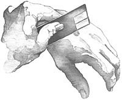
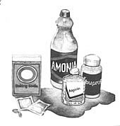

Bees usually don't go looking for trouble. If you don't bother them by poking around their nests, chances are you'll never get stung. And even if you do, most bee stings cause little pain, usually lasting from a few hours to a few days. Unless, of course, you're allergic, in which case you need emergency care. But for the vast majority of the population, a little tender loving care is all you'll need.
One of the best ways to remove a stinger - and avoid any additional pain - is to "scrape" it out of the skin with a credit card, a knife or a long fingernail, advises John Yunginger, M.D., professor and pediatrics consultant at the Mayo Clinic in Rochester, Minnesota. "The biggest mistake people make is trying to pull the stinger out. In doing that, you squeeze the tiny venom sac attached to the stinger and accidentally release more venom into your skin." If you scrape the stinger out, this sac goes undisturbed.
"Rubbing a wet aspirin on the area where you were stung can help neutralize some of the inflammatory agents in the venom," says Herbert Luscombe, M.D., professor emeritus of dermatology at Jefferson Medical College in Philadelphia. If you are allergic or sensitive to aspirin taken by mouth, though, you shouldn't try rubbing it on your skin.
"Make a paste with meat tenderizer and water and apply it to the sting," says Philip Koehler, Ph.D., an entomologist at the U.S. Department of Agriculture Laboratory at the University of Florida in Gainesville. "The reason meat tenderizer works is because insect bites and stings are made up of protein, and meat tenderizer breaks down this protein." Use Adolph's, McCormick or another product that contains papain - the active venom-busting ingredient.
Some doctors say baking soda can ease bee-sting pain. Claude Frazier, M.D., an allergist in Asheville, North Carolina, recommends applying a paste of baking soda and water directly on the sting for 15 or 20 minutes.
One towelette product that works well is called Sting-Kill. "This product is sold at some pharmacies and at beekeeper-supply stores, and I'm told it's very effective," says Dr. Yunginger. Wonder where to find such a store? Call a local beekeeper and ask where you can purchase Sting-Kill; there are beekeeper-supply stores in most metropolitan areas.
Sometimes dabbing some household ammonia on the sting also does the trick, says Dr. Luscombe. In fact, ammonia is a key ingredient in a product called After Bite, which is sold over the counter and comes in convenient towelettes that you rub on the sting.
"One of the best ways to relieve the pain of a bee sting is to take a mild pain reliever such as aspirin, ibuprofen (Advil) or acetaminophen (Tylenol)," says wilderness medicine specialist Kenneth W. Kizer, M.D., M.P.H., professor of emergency medicine at the University of California, Davis. Do not give aspirin to children because of the risk of Reye's syndrome.
Benadryl or another nonprescription antihistamine will ease swelling and pain in adults. An antihistamine-containing cough syrup such as Benylin works better for children, advises Dr. Koehler.
Bees are attracted to brightly colored clothing - particularly floral prints and dark colors. Wearing white, khaki and other light colors is a good way to keep bees away.
The sweet smell of flowers isn't the only fragrance that attracts bees. Wearing perfume or aftershave may entice them. So skip the refined s cents if you know you're venturing into bee-filled territory.
Certain nutrients such as zinc appear to offer protection against some insects, possibly by altering body odor. George Shambaugh, Jr., M.D., professor emeritus of otolaryngology/head and neck surgery at Northwestern University Medical School in Chicago, advises taking 60 milligrams a day - about four times the Recommended Dietary Allowance. Good dietary sources of zinc include oysters, red meats and fortified cereals. Besides zinc, thiamine (vitamin B) may also help. Check with your doctor first, though, because high levels of some nutrients can cause problems.
No matter what the species of bee, the spot it stings will appear red and swollen. But all bees are not the same, and neither is their method of stinging, according to Edgar Raffensperger, Ph.D., professor of entomology at Cornell University in Ithaca, New York. Honeybees, which have a fuzzy, golden brown body, sting only once and then die. That's because their stingers remain embedded in your skin. Wasps and hornets can sting repeatedly because they have smooth stingers that can exit pierced skin easily. Don't smash them, because when destroyed, their venom sac releases a chemical that incites other yellow jackets to attack.
Allergic reactions to bee stings can be life threatening. In fact, as many as 100 people a year die from bee stings. That's more than the number who die from the bites or stings of all other animals combined, says University of California Dr. Kenneth W. Kizer. How do you recognize an allergic reaction?
Eat some potato salad left unrefrigerated, or have some luncheon meat handled by someone with unwashed hands, and you may find out what stomach rebellion is all about. Food poisoning is usually the result of eating food or drinking water that's been contaminated with infectious bacteria. Some bacteria work by secreting toxins that affect the whole body, including the digestive tract. Others work by directly attacking the lining of the intestines. Typically you'll experience abdominal cramps, diarrhea or vomiting within 24 to 48 hours after dining. You may also experience sweating, itching or even a slight fever. These symptoms usually end after a day or two. It usually hits hardest when your immune system is already weak from previous illness.
When you find yourself infected with bacteria or a virus that causes food poisoning, you may simply have to be miserable for a short time, until your system responds and fights off the infection. But as bad as that spell may be, there are some things that you can do to coddle your innards while you wait for the misery to pass.
"You are losing liquids quickly when you have food poisoning. Therefore, it is extremely important to replenish your system," says Joseph Madden, Ph.D., of the Center for Food Safety and Applied Nutrition, a branch of the Food and Drug Administration in Washington, D.C. "Start with a few sips of water. Then start drinking fluids containing sugar, because they are better absorbed." Try clear fruit juices. If vomiting is a problem, wait several hours before taking in liquids.
Drinks like Gatorade contain electrolytes, which are essential elements, such as potassium and sodium, that influence the way water is distributed throughout your body. "When you're vomiting or having diarrhea, these elements get lost along with liquid during dehydration," says Dr. Madden. "The sports drinks help replenish these necessary elements as well as rehydrate your body with water." Rehydration is more important than replacement of electrolytes, so sports drinks can be diluted 50:50 with water.
If you feel the urge to reach for an antacid, stop yourself. They don't really help. If you're suffering from traveler's diarrhea, however, Pepto Bismol will relieve symptoms until you feel better.
"Most of the time, food poisoning problems tend to resolve themselves without needing intervention," says Dr. Madden. Once your body's immune system takes over, you'll be feeling better soon. Just rest, drink fluids and, when you feel a little better, start to establish a diet.
When you feel ready to begin eating, a bland diet is recommended. This means eating easily digestible foods such as cereal, pudding or chicken soup. Be sure to avoid foods that are fried, smoked or salty as well as raw vegetables, pastries, candies, alcohol, spices and condiments.
Most cases of food poisoning don't require medical attention. However, if you have any of the following warning signs, which could signal a more significant problem, it's wise to see your doctor:
You carry around your own air conditioner, and most of the time it works like a charm. All that pollution-free liquid evaporating from your skin (better known as good old sweat) cools your body without depleting the ozone layer one bit. The trouble is, spend too much time in the sun and not enough time drinking to replace fluids, and you risk heat exhaustion. Since dehydration is usually the cause, the first symptom is extreme thirst. But there are others, including loss of appetite, headache, fatigue, dizziness and nausea or even vomiting. Other signs of heat exhaustion: Notice if your heart races and you have trouble concentrating after spending a long time outdoors in hot weather. The first thing you should do whenever you start to feel any of these symptoms is rest in a nice shady spot or, even better, get indoors. Then follow up with some tactics that will help your body beat the heat.
"The key is to keep properly hydrated," says Peter Raven, Ph.D., professor of physiology at Texas College of Osteopathic Medicine in Fort Worth. That means drinking enough fluids to feel full before you venture outdoors - particularly if you'll be doing anything strenuous. Most experts recommend that you drink at least eight ounces (one large glass) before going outdoors. Even better, drink up to 20 ounces (or enough water that you have to urinate). "Ideally, you should drink another cup of water every 10 to 15 minutes while you're outdoors," adds Dr. Raven. "I suggest you carry a water bottle with you, so you can take frequent drinks."
"You pick up more radiant heat exposure with your shirt off," says Lanny Nalder, Ph.D., director of the Human Performance Research Center at Utah State University in Logan. "Once you start perspiring, a shirt can act like a cooling device when the wind blows through."
"They have a fairly high water content, and good salt balance," says Richard Keller, M.D., an emergency room physician at St. Therese Medical Center in Waukegan, Illinois. Another bonus: They also replace vitamins and minerals lost in sweat.
Although dehydration can also result from a lack of salt, don't think you're doing your body a service by taking salt tablets. "They do the opposite of what they're supposed to do," says W. Larry Kenney Ph.D., associate professor of applied physiology at Pennsylvania State University in University Park. "The increased salt in the stomach keeps fluids there longer, which leaves less fluid available for sweat production."
Before you venture outdoors, weigh yourself - and then weigh yourself again when you return. "All of that lost weight is water loss, so drink that much back," adds Dr. Raven. Keep in mind that one pound equals two glasses of water.
Want to celebrate summer with a cold beer and fun in the sun? Well, all that beer may lead to one big case of heat exhaustion, say experts. Beer, like other alcoholic drinks, can actually promote heat exhaustion by "fast-forwarding" dehydration, says Danny Wheat, head trainer for the Texas Rangers professional baseball team. (The team often plays in 100°F-plus conditions in Arlington, Texas.) Since beer is a diuretic that causes excessive urination, it should be avoided even before you venture into the hot sun. Instead of beer, stick to drinking water, fruit juices, or sports drinks. If you feel symptoms of heat exhaustion, Pedialyte and other rehydrant formulas for infants are also effective. (The Texas Rangers' staff gives them to their players in extremely hot weather, Wheat says.)
When to see the doctor
If someone has trouble walking, standing, answering questions coherently, or staying conscious after long heat exposure, she may have heatstroke, a potentially fatal condition in which the kidneys shut down and the body goes into shock. If you even suspect that a person has heatstroke, call for an ambulance. If you have to wait, cool the person by splashing cool water on her, wrapping her in soaked towels, moving her to an air-conditioned room, or immersing her in cool, shallow water.
Limiting your sun exposure is essential, particularly between the sizzling summer hours of 10:00 a.m. and 3:00 p.m. The best prevention for your skin is also a wise protection: Wear sunscreen with an SPF (sun protection factor) of 15 all the time.
Okay, you forgot. And now you're in pain. Well, you can try those old standbys, aloe and over-the-counter hydrocortisone cream. Even an extra moisturizer can help a lot. And there are other remedies.
"Dip some gauze into milk and apply it to your sunburned skin," says dermatologist John F. Romano, M.D., clinical assistant professor of medicine at the New York Hospital-Cornell Medical Center in New York City. The milk should be about room temperature or slightly cooler but not refrigerator-cold. "It's an excellent remedy for any kind of burn," notes Dr. Romano.
Keep this milk compress on the burn for 20 minutes or so, and repeat every two to four hours. Since milk can leave skin smelling "sour," rinse yourself off with cool water afterward.
Boil some lettuce in water, then strain it and let the liquid cool for a few hours in the refrigerator before applying it to your skin with cotton balls, recommends Lia Schorr, a New York City skin care specialist and author of Lia Schorr's Seasonal Skin Care. Other vegetables that produce results? Thinly sliced pieces of raw cucumber, potato, or apple can be placed on sunburned areas such as the forearm. The coolness from the vegetables is soothing and might help reduce inflammation.
"Probably the best thing you can do is to take two times the recommended amount of ibuprofen (Advil) or another pain reliever for the first two doses and then go to the recommended dose," advises Dr. Romano. Doubling the usual dosage of ibuprofen or aspirin helps block a chemical in your body that causes pain. But check with your doctor, since some people have a reaction to aspirin. And remember not to give aspirin to children because of the risk of Reye's syndrome.
A regular dose of vitamin E "...decreases the inflammation you can get from sunburn," says Karen E. Burke, M.D., Ph.D., a dermatologist in New York City. You can treat sunburn with a direct application of vitamin E by opening a vitamin E acetate capsule and rubbing the liquid directly on your skin, but it's more effective to take it internally to decrease sunburn pain, suggests Dr. Burke. If you choose to purchase vitamin E supplements, be sure to read the small print: You should get only the natural form. But check with your doctor before taking vitamin E or other vitamin supplements.
"Pour one cup of white-cider kitchen vinegar into a tub of tepid water and soak yourself in it," recommends Harry Roth, M.D., clinical professor of dermatology at the University of California, San Francisco. "It's very soothing to your skin and helps relieve the pain of sunburn." Another recipe for relief, also from the kitchen cabinet: Mix ¼ cup of baking soda and ¼ cup of cornstarch into a tub of tepid water and soak yourself, adds Dr. Roth.
If you find the smell of vinegar or milk too intense, you can wrap dry oatmeal in some gauze or cheesecloth and run cool water through it, suggests Dr. Haberman. Wring out the excess water and apply for 20 minutes every two to four hours.
While you have sunburn, stay away from highly fragrant bubble baths, soaps, colognes and perfumes, according to Thomas Gossel, Ph.D., R.Ph., professor of pharmacology and toxicology at Ohio Northern University College of Pharmacy in Ada. They may be too drying and irritating to your already parched skin. Stick with mild soaps and don't scrub too hard when you wash.
Some diuretics, antibiotics, tranquilizers, birth control pills and diabetes medications can add more salt to your sunburn wounds. They can make you sun sensitive. So can some medicated soaps, perfumes and RetinA, the wrinkle "remover." So if you use any of these medications or products, doctors advise you to take extra precautions when exposing your skin to the sun's rays.
An everyday case of sunburn may hurt like the dickens and interfere with just about every detail of life, but it usually doesn't require medical help. However, get yourself to a doctor if you experience chills, nausea, fever, faintness or fatigue, warns dermatologist Rodney Basler, M.D., assistant professor of internal medicine at the University of Nebraska Medical Center in Omaha. And be sure to get help immediately if your burn is accompanied by purple blotches or other skin discoloration, excessive blistering or intense itching. These symptoms may indicate internal complications.
Adapted from: The Doctor's Book of Home Remedies II (Rodale Presss, 1993) by Sid Kirchheimer. Copyright © 1993 by Sid Kirchheimer.
|
MOTHER EARTH NEWS STAFF A little care plus these simple remedies can keep your summer fun and healthy! |
 MOTHER EARTH NEWS STAFF One of the best ways to remove an insect stinger is to scrape it out with a credit card, knife or long fingernail. |
 MOTHER EARTH NEWS STAFF Simple household items can be great additions to a home first-aid kit. |